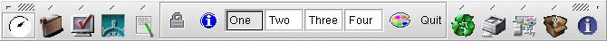
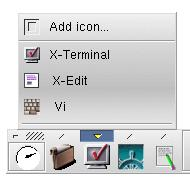

The functions of the main panel are:
Launch applications
Open popup menus
Switch virtual desktop
Give access to the configuration of the desktop

Figure 2-1. Main panel
The clock has no function other than showing the time. You can select an analog or digital clock by clicking with the right mouse button on the clock.
The icons are used to launch applications.To modify an icon on the main panel, or associate a command to an icon, click on the corresponding icon with the right mouse button.
Some text based applications, such as "vi" require a terminal (xterm) to be opened. You can use the keyword "term" to start a terminal before running the command.
term vi |
The number of virtual desktops is user configurable, from 2 to 10 desktops. See Setup Dialog later in this manual for more details.
To change the label of a virtual screen button, click on the button using the right mouse button.
On top of each icon, there is a little tiny arrow. Each of these buttons opens a popup menu.

Figure 2-2. Pop-up menu
Popup menus are another way of launching applications from the XFce panel. Each entry is associated with an application that is launched when the menu entry is selected. Drag and drop from various file managers (XFTree included, of course) is supported. For example, you can drag a C source file onto the X-Edit entry and xedit will be started and open the specified file.
An existing entry can be modified by using the right mouse button. The item on the top of the menu, called "Add icon...", is used to add new entries to the menu. Drag and drop is also supported, but it does not trigger the same action. In fact, when you drop a file (preferably an executable) an entry is automatically added to the corresponding menu with a default icon. You can later change this icon by using the right mouse button.
By clicking on the line at the bottom of the menu you can "detach" the menu. Once a menu is detached you can move it around your screen and it stays opened even if an entry is selected, which can be very convenient. This only works when the option "Use tear-off menu" is enabled.